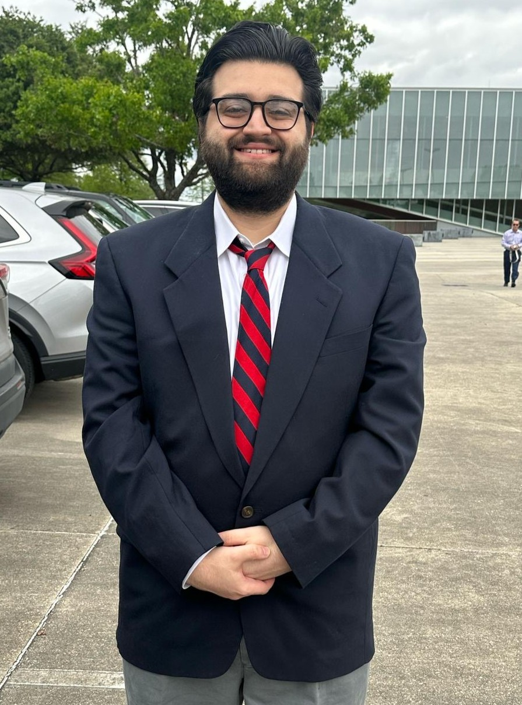

Contractibility of the orbit space of a saturated fusion system after Steinberg

ODI study finite groups locally at a prime p, and the higher-categorical structures that encode them: partial groups, fusion systems, Segal conditions, and nerve theorems.
I'm a graduate student advised by Justin Lynd and Philip Hackney. My thesis has two connected threads:
The higher Segal degree of localities of symmetric and alternating groups at the prime 2.
Nerve theorems for higher categorical structures via monads, including cyclic multicategories.
More broadly, I think about fusion systems and their homotopy theory and homological algebra, and modular representation theory.